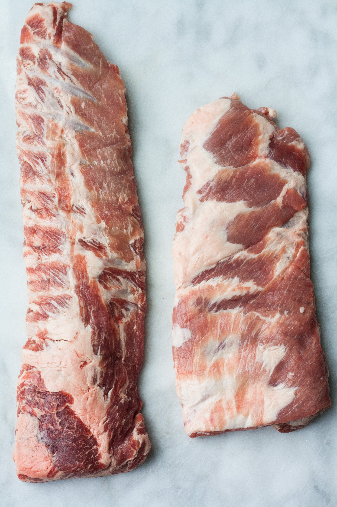

<section class="section section-md bg-default">
    <div class="container">
        <div class="row row-70 justify-content-md-center justify-content-xl-between">
            <div class="col-md-10 col-lg-6 col-xl-5">
                <h4>Our Mission</h4>
                <p style="text-align: justify; text-justify: inter-word;">The Ireland Natural Food Company was founded in 2017. Its founder, Mr. Paul Young, who immigrated to Ireland 39 years ago, first started a very successful Chinese and French Restaurant in Ireland after he graduated from Cathal Brugha Street, College of Catering in the 1980’s. His vision was to provide finest Chinese and French cuisine to customers therefore quality food material selection was the key to its success. He carefully selected a meat supplier which is not only accredited to BRC Global Standard food safety, but are very proud of their H.A.C.C.P. “Total Quality Assurance” system.
                    <br><br>At a time, when increasing numbers of people are seeking high quality natural food for the sake of good health, Paul further expands his vision as a Natural Irish food distributor and focus on providing high quality meat to all customers. As he has an excellent historic business relationship with the accredited meat supplier, Ireland Natural Food Company is now authorized as the sole distributor of the Irish pork to Asian countries.
                </p>
            </div>
            <div class="col-md-10 col-lg-6">
                <div class="row grid-2">
                    <div class="col-6">
                        
                        
                    </div>
                    <div class="col-6">
                        
                    </div>
                </div>
            </div>
        </div>
    </div>
</section>